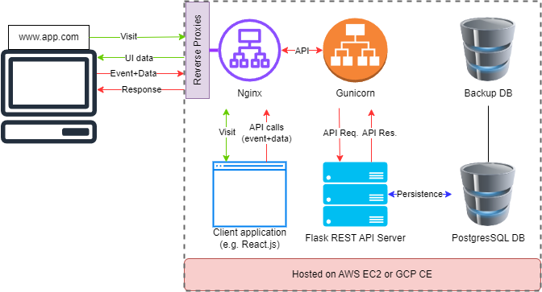

A Simple and Scalable Architecture for Your Next To-Do App
I proposed in one of my LinkedIn posts that personal projects involving CRUD operations have now become somewhat obsolete and don’t teach significant skills. I suggested that if CRUD projects adopt a client-server architecture, it would spice things up and also teach a lot about decoupling and scalable application development. In this post, I am proposing a simple client-server architecture for your personal project.
The Architecture at a Glance
This architecture consists of five main components:
- Client Application (Frontend) - Let’s say React.js.
- Reverse Proxy - Nginx for securing and balancing incoming HTTP requests toward front-end and back-end services.
- Application Server (Backend) - Flask API running on Gunicorn to handle concurrent requests.
- Database - PostgreSQL for data persistence, backup, and sync.
- Hosting - This setup is designed to be hosted on cloud virtual instances like AWS EC2 or Google Cloud Platform Compute Engine.
How it Works

1. Client Side:
- The user interacts with the client application, which can be built using React.js or any other framework. I believe that the front end is just an implementation detail and can reside on multiple platforms. The frontend only handles the UI logic and user-generated data.
- When the user interacts with the UI (e.g., clicking a button to add a task), the client captures these actions as events and sends them as API calls to the backend via HTTP requests.
2. Nginx as a Reverse Proxy:
- All incoming requests from the client first pass through Nginx, which acts as a reverse proxy.
- Nginx forwards the API requests to the Flask server (running on Gunicorn), ensuring that the backend is never directly exposed to the client. This also helps with load balancing by distributing traffic across multiple backend instances if necessary.
3. Flask REST API on Gunicorn:
- The core of the application is the Flask REST API. This API receives the API requests from the frontend, processes the logic (e.g., creating or updating an item), and interacts with the PostgreSQL database to store or retrieve the necessary data.
- Gunicorn, the application server, ensures that multiple requests can be handled concurrently, improving the overall performance of the application.
4. PostgreSQL Database:
- The PostgreSQL database stores all the persistent data, such as the items created by the user.
- Each API request that involves adding, updating, or deleting an item interacts with this database, ensuring that all changes are stored reliably.
5. Backup Database:
- For added reliability, a backup database is often used. This database stores a copy of the main PostgreSQL database, ensuring that if any issues arise, the data is safe and can be restored quickly.
- This ensures that even if the primary database goes down, your data will remain intact.
6. Cloud Hosting (AWS/GCP):
- The entire architecture is hosted on cloud platforms like AWS EC2 or GCP Compute Engine, making it highly accessible and scalable. This setup allows you to expand your application as needed, whether that involves adding more frontend or backend instances to handle increased traffic or simply ensuring your app is accessible from any device. However, infrastructure scaling is not part of this architecture.
Why This Architecture Works Well
1. Separation of Concerns:
- In this architecture, the frontend and backend are completely decoupled. The frontend handles the user interface (UI) and communicates with the backend through secure REST APIs.
- This decoupling allows you to work on either the UI or backend independently without breaking the other. For example, you can update your React frontend while keeping the Flask API unchanged, or vice versa.
2. Security with Nginx:
- One of the key security advantages is that the client never interacts directly with the backend. Instead, user events (like adding new data) are captured by the frontend and sent as API requests.
- Nginx, acting as a reverse proxy, sits between the client and the Flask server, forwarding these API calls securely. This setup reduces the server's exposure to the public internet, ensuring a more secure environment for your backend services.
3. Gunicorn for Load Balancing:
- Gunicorn is the WSGI server that powers the Flask app, ensuring that multiple API requests can be processed concurrently. This means your backend can handle more traffic, making the app scalable as user demand grows.
- Gunicorn efficiently manages requests, improving the app's ability to scale without slowing down under load.
4. Data Reliability with a Backup DB:
- While not essential for every app, adding a Backup Database ensures that you don’t lose important data if something goes wrong with your main database. This PostgreSQL backup can sync automatically with the primary database, providing peace of mind in the event of failure.
5. Cloud Hosting for Flexibility:
- If you decide to turn your to-do app into a mobile or desktop app later, you can simply connect to the same backend without making major changes.
- Additionally, cloud services often come with built-in features like autoscaling, load balancing, and security options to further enhance your app’s performance and reliability at a later stage.
Whether you're building your first to-do app or a more complex project, this client-server architecture offers a strong foundation. Its modular design allows for easy development and updates, its security features keep your data and server safe, and its cloud-hosted flexibility enables future expansion. With a clear separation of concerns, a scalable backend, and robust data handling, you can confidently build apps that are both simple and powerful.